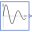

Damping |
Type Information
| Real |
Quantity: DampingCoefficient Unit: s-1 |
|---|
Used in Components (5)
|  |
Modelica.Blocks.Sources
Generate exponentially damped sine signal |
|
Modelica.Electrical.Analog.Sources
Exponentially damped sine voltage source |
|
|
Modelica.Electrical.Analog.Sources
Exponentially damped sine current source |
|
|
Modelica.Electrical.Spice3.Sources
Sinusoidal voltage source |
|
|
Modelica.Electrical.Spice3.Sources
Sinusoidal current source |